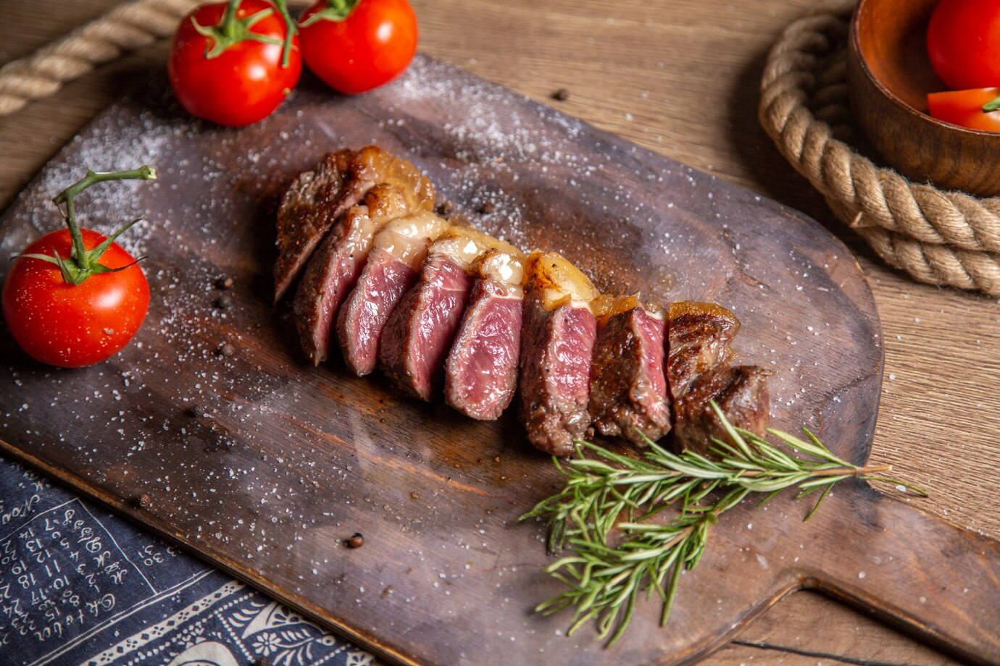

Picanha

Picanha is the best cut of meat brazilian churrasco has to offer. Let's grill!
Ingredients:
- 3 to 4 pounds of picanha
- Coarse salt to taste (can be substituted by kosher salt)
- Freshly ground black pepper, to taste
- High heat oil, for greasing the grill
- 6 pounds of coal
Instructions:
- If the steak has been refrigerated, take it out 1 hour before you preheat the grill and let it come to room temperature.
- Lay the top sirloin cap flat on a cutting board or another work surface, fat-side up. Using a small sharp knife, cut the fat layer, without cutting to the meat, in a cross-hatch pattern, as you would do for a ham.
- Massage 1 tablespoon of salt into crevices of the cross-hatched fat layer of the steak. Season with freshly ground black pepper.
- If you want to skewer the steak, cut the steak lengthwise into three equal pieces.
- Roll each steak piece like a jelly-roll and, using a large metal skewer, secure the steak so it holds together rolled up. Sprinkle the remaining salt over the unseasoned sides of the steak.
- Heat a charcoal grill until very hot before carefully scraping the coals to the back of the grill. Immediately add the steak to the front side of the grill.
- Cook the steaks for 20 to 25 minutes, turning them every 5 to 7 minutes to ensure even cooking. When the internal temperature reaches 128 F to 130 F for medium-rare on an instant-read thermometer, take the picanha off the grill.
- Let the steaks rest 5 minutes, then remove from the skewer and slice against the grain and serve. Enjoy it with some rice and farofa!